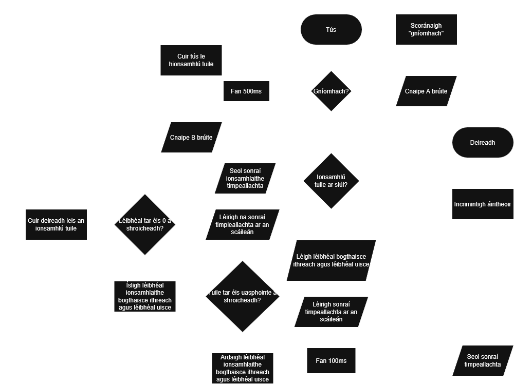

Tá an córas leabaithe atá déanta agam curtha i ngíomh agus as gníomh trí iochur digiteach i bhfoirm brú chnaipe A, agus tógann sé ionchur analógach a thógáil ó bhraiteoirí atá nasctha leis.
Aschuirtear na sonraí sin go dtí ríomhaire atá ceangailte leis trí USB, chomh maith le bheith léirithe ar scáiléan an micro:bit. Tá aschur fuaime freisin, agus solas preabach stádais.
Baineann an córas úsáid as bhraiteoirí timpeallachta chun bogthasice ithreach agus léibhéal uisce a thomhais. Ansin, seolann sé na sonraí seo chuig ríomhaire thar cheangailt USB ag baint úsáid as an modúl python serial, áit a stóráiltear é i gcomhad .csv.
Tá feidhm curtha isteach agam chun oibriú an chórais a chur chun triall. Déanann an feidhm seo, a spreagtar trí bhrú chnaipe, ionsamhlú de na léibhéal bogthaise ithreach agus léibhéal uisce ag dul in airde de réir a chéile sula dtiteann siad go náid arís.
Sa ríomhchlár atá á rith ar an ríomhaire atá nasctha leis an micro:bit, tá córas a dhéanann measúnú ar na sonraí a fhaigheann sé agus a oibríonn amach an baol tuile, más baol beag, baol ard, nó más dócha go bhfuil tuile ar siúl cheana féin.
Chomh maith leis sin, chruthaigh mé ionsamhlú le rith ar an micro:bit a dhéanfadh aithris ar na braiteoirí ag braith léibhéal bogthaise ithreach agus léibhéal uisce ag dul in airde i ndiaidh a chéile, agus ansin ag crapadh ar ais arís.
Faoi dheireadh, tar éis luachanna a léamh ó na braiteoirí a chinntear go bhfuil siad tar éis léibhéal contúirteach a shroicheadh i comparáid le tairsigh ionsamhlaithe, déanfaidh an córas aláram a chur ag bualadh.
Don tionscadal seo, bhí orm cinntiú céard iad na toiscí a chuireann le tuilte san fhoraois ionas gur féidir liom iad a thomhais. Thosaigh mé ag cuardach eolas ar an Idirlíon agus fuair mé neart turgnaimh agus suirbhéithe úsáideacha. D'fhoghlaim mé go raibh baint láidir ag tuilte le léibhéal ard bogthaise ithreach, agus go raibh sé seo níos tábhachtaí ná mar a bheadh sé de ghnáth i gcomhthéacs foraíse mar go ndéanann léibhéal ard bogthaise ithreach mianraí agus cothaithigh a ghlanadh chun siúl, rud a fhágann nach bhfuil go leor dóibh seo fágtha do na crainn. Dar ndóigh, tá sé seo díobhálach d'fhoraoisí, agus mar sin chinn mé chun an léibhéal bogthaise ithreach a úsáid mar athróg ionadach don damáiste a ndéanfadh an tuile d'fhoraois1.
D'fhoghlaim mé chomh maith go bhfuil coinníollacha bogthaise ithreach níos tábhachtaí ná fiú an líon báistí i dtaobh tosú tuile, agus go n-úsáidtear torthaí saitilíte bogthaise ithreach chun fáidheadóireacht tuile a dhéanamh go proifisiúnta2. Faraor, níl mo shaitilít féin agam, ach tá mé fós in ann bogthaise ithreach a thomhais le braiteoir talún.
Chomh maith leis sin, tarlaíonn tuilte nuair a thagann léibhéal an uisce thar léibhéal na talún3. Dá bharr sin, bheadh braiteoir léibhéal uisce an-úsáideach le súil a choinneáil ar ché chomh ghar is atá léibhéal an uisce leis an dromchlá. Má tá léibhéal an uisce an-ard, tá baol suntasach tuile ann, agus mar sin tá sé ábhartha léibhéal an uisce a thomhais.
Agus mé ag cur tús leis an tionscadal seo, bhí roghanna iomadúla agam de thionscadal féideartha a shásódh an choimre. Roghnaigh me an treo seo ar roinnt cúiseanna, áfach.
D'fhéadfadh liom córas rabhaithe falscaí bunaithe ar bhraiteoirí teochta agus bogthaise atmaisféaracha a dhéanamh; ba rogha coitianta é seo i mo rang, ach shíl mé go mbéadh sé níos oiriúnaí obair le tuilte, mar go bhfuil tuilte i bhfad níos líonmhaire in Éireann ná mar atá falscaithe.
Bhí mé in ann córas ilchumasach samhaltú aimsire a dhéanamh freisin, rud a dtuarfadh an aimsir bunaithe ar chruinneagán de a lán fachtóirí agus ionchuir éagsúla timpeallachta, ach mheas mé go mbeadh sé seo róneamhphraiticiúil agus neamiontaofa chun tástáil a dhéanamh air faoi choinníolacha ilchineálach.
Agus é seo ar fad ar intinn agam, chinn mé go ndéanfadh mé córas rabhaithe tuile, agus go léireodh mé na sonraí uaidh i ndá bharra ar scáileán an micro:bit (barra amháin do bhogtaise ithreach agus barra eile do léibhéal uisce), a leathnódh ó chlé go deis an scáileáin de réir mar a ardódh na athróga comhfhreagrach, agus a dtarraingeodh siar de réir mar a ísleodh siad.
Ba iad na braiteoirí a roghnaigh mé le húsáid, agus de bharr sin na luachanna a bheadh mé á dtomhas, braiteoirí bogthaise ithreach agus léibhéal uisce. Taobh leis na fáthanna a mhínítear sa roinn imscrúdú, bhí cúiseanna agam dó seo: ar an gcéad dul síos, tá baint láidir ag na luachanna seo le titim báistí agus toisceanna timpeallachta eile a chuireann le tuilte. Ar an dara dul síos, bhí braiteoirí do na hathróga seo ar fáil dom go héasca. Ar an tríú dul síos, beadh sé i bhfad níos praiticiúla na braiteoirí seo a chur chun triall faoi choinníollacha éágsúla ná braiteoirí eile a d'fhéadfadh liom iad a úsáid freisin, mar gur féidir na toisceanna a thomhaiseann siad seo a ionramháil go héasca.
Tháinig na braiteoirí seo ó fearais déanta ag ELECFREAKS, agus bhí breisiú don micro:bit ann a lig dom iad a úsáid le chéile ag baint úsáid as an "iot:bit" a rinne siad.
Roghnaigh mé chun na luachanna a bhailítear ó na braiteoirí a chur in iúil trí dhá bharra ar scáileán an micro:bit. Rinne mé é seo seachas braith ar feidhm léiriúcháin ionsuite an micro:bit, rud a mheas mé nach amháin go raibh sé rómhall ag taispeáint eolais chun coinneáil suas leis an ráta ag a bhféadfadh cúrsaí athrú sa timpeallacht, ach chomh maith leis sin cuireann sé stop le gach próiséas eile fad is atá an léiriúchán ar siúl, rud a chuirfeadh isteach ar fheidhmeanna amíogair, an t-aláram ina measc.
Roghnaigh mé ansin chun na sonraí a sheolfar ón micro:bit a stóráil i bhfoirm comhad .csv, seachas seirbhís bunachair sonraí ar líne ar nós ThingSpeak a úsáid; rinne mé seo mar go bhfuil níos mó taithí agam le húsáid an modúl python serial ná mar atá agam le seirbhísí mar sin, agus chun dul i ngleic le drochiontaofacht ceangailt idirlíne i bhfoirgneam mo scoile.
Agus mé ag obair ar an samhail agus an córas leabaithe, bhain mé úsáid as Thonny agus Microsoft MakeCode for micro:bit. Agus mé ag déanamh tuairisc ar an tionscadal, bhain mé úsáid as Notepad + + chun HTML agus CSS an leathanaigh seo a scríobh.
Bheadh an tionscadal seo úsáideach i gcomhair go leor ábhair spéise. Ina measc siúd tá daoine a chónaíonn i gceantar atá tughta do thuilte agus a mbeadh ag iarradh a bheith ar an eolas nuair atá tuilte chun teacht ionas go mbeadh siad in ann ullhmú; is i gcásanna mar seo a bheadh gnéithe cosúil leis an aláram tábhachtach. Chomh maith leis sin, tá daoine ann a ndéanfadh staidéir ar an aimsir i gceantar áirithe agus a bheadh in ann leas a bhaint as na sonraí a bheadh á stóráil ag an gcóras seo. Sa chás seo, beidh na barraí stádais úsáideach, ag ligeant don úsáideoir caoi an réigiún a fheiceáil gan ach sracfhéachaint.
Tar éis cúpla babhta pleanála agus athdhearaidh, bhí cuma ar an sreabhchárta a rinne mé don chóras mar seo:

Flowchart déanta le húsáid drawio.comSeachtain 1. Thosaigh mé ag obair ar an tobsmaointeoireacht roghanna éagsúla tionscadail agus ag déanamh cinneadh ar cén ceann is fearr.
Seachtain 2. Roghnaigh mé topaic an tionscadail agus bhailigh mé na hábhair agus trealamh a bheadh ag teastáil chun é a chur i gcrích.
Seachtain 3-4. Thosaigh mé ag obair ar an gcóras leabaithe ag baint úsáid as an ionsamhlóir micro:bit MakeCode. Scríobh mé ríomchláir freisin chun an feidhm bhunúsach de shonraí a sheoltar ón micro:bit a thógáil isteach.
Seachtain 5-7. Chruthaigh mé na barraí stádais, rud a léireodh an bogthaise ithreach agus léibhéal uisce a bhí braite ag na braiteoirí. Rinne mé tástáil ar an nasc idir an micro:bit agus an ríomhaire, agus chruthaigh mé an feidhm aláraim.
Seachtain 8-9. Rinne mé an ionsamhlú tuile agus cheartaigh mé mo bharúlacha contráilte faoi na braiteoirí, rud a bhí ag cruthú fadbhanna go dtí seo.
Seachtain 10. Chuir mé tús leis an obair ar an tuarisc, dhigitigh mé an sreabhchárta agus d'aontaigh mé gach comhad ábhartha i bhfilteán amháin.
Seachtain 11-12. Lean mé ag obair ar an tuairisc, taifead an fhíseáin ina measc, agus rinne mé tástáil ar an gcóras faoi choinníolacha fíora.
Chuir mé tástáil i gcrích ar an gcóras leabaithe, an córas bailithe sonraí agus an samhail ar fad ina n-aonar sula raibh siad réidh le hobair le chéile. Rinne tástáil aonaid i rith an phróiséais forbartha ar fad, ag déanamh tástáil ar an gcóras leabaithe leis an ionsamhlóir micro:bit MakeCode, agus ag déanamh tástáil ar bhailiú na sonraí agus an samhail i líne na n-orduithe.
Rinne mé tástáil ar na braiteoirí sula raibh an córas iomlán réidh le hiad a úsáid trí ábhar seoltach a leagadh orthu agus iad a cheangailt leis an micro:bit. Nuair a dhéanainn seo, thagadh léamh nach raibh aon fíorluach ná úsáid ag baint leis, ach bhí mé in ann cinntiú go raibh gach rud ceangailte mar is ceart tríd an modh seo. Is féidir torthaí na tástálacha sin a léiriú mar seo:
| Trial | Toradh ionchais | Fíorthoradh | Pas / Teip? |
|---|---|---|---|
| Braiteoirí fágtha ina n-aonar | Barraí stádais ag léiriú náid | Barraí stádais ag léiriú náid | Pas |
| Ábhar seoltach leaghta ar na braiteoirí | Barraí stádais ag léiriú luach níos airde ná náid | Barraí stádais leathbhealach go dtí lán | Pas |
Nuair a bhí gach rud beagnach críochnaithe, rinne mé tástáil ar an mbraiteoir léibhéal uisce trí é a choinneál leis an cuid mothálach de in uisce. Rinne mé é seo le huasphointe na léamh a thiocfadh uaidh a fhiosrú, mar nach raibh mé cinnte cad é an uasluach féideartha.
Ceann amháin de na fadhbanna a bhí agam ná, nuair a cheangláiodh mé an braiteoir léibhéail uisce leis an micro:bit, líonadh sé cuid den bharra stádais a bhí in úsáid agam chun súil a choinneáil ar na hathróga timpeallachta agus a d'fhág líne ingearach trí lár scáileán an micro:bit.
Ba fhadhb é seo; ní amháin mar nach raibh mé ag súil leis agus de bharr sin ní raibh mé cinnte má bhí sé ag cur isteach ar na léamh a bhí á bhailiú agus á stóráil, ach mar go raibh sé tábhachtach go mbeadh mé in ann an scáileán a léamh go héasca le cinntiú go raibh na léamh ón mbraiteoir ag feidhmiú i gceart; bhí sé seo dodhéanta de bharr an líne ingearach agus an barra stádais míchruinn.
Ar mhaithe leis seo a dheisiú, rinne mé scrúdú ar nascanna sreangú an bhraiteora go dtí gur thug mé faoi dearadh go raibh deireadh na sreinge a bhí nasctha leis an micro:bit níos mó ná an ceann a bhí ag an mbraiteoir eile. Mar thurgnamh, rinne mé an sreang a mhalartú ionas go mbeadh na deirí den sreang araon san áit ina raibh an deireadh eile roimhe sin, agus tar éis seo thosaigh an braiteoir ag feidhmiú mar is ceart, ag léiriú an luach ceart (0) nuair nach raibh sé in uisce, agus bhí an líne ingearach a chuireadh isteach ar mo léamh imithe.
Baineann an samhail a chur mé a bhfeidhm úsáid as na sonraí atá á bhailiú chomh luath is a seoltar iad chuid an ríomhaire. Cuirtear an bogthaise ithreach agus an léibhéal uisce araon i gcomparáid le tairsigh ionsamhlaithe, ag cur i láthair cé chomh ard is a gcaithfeadh na luachanna seo teacht ionas go mbeadh siad contúirteach. Déantar an tomhas contúirte seo a stóráil taobh leis na sonraí óna ríomhadh é.
Nuair aa cúrsaí mar is gnáth, taispeánfar an contúirt tuile mar "None". Nuair a shriocheann athróg amháin léibhéal contúirteach, áfach, beidh sé "Risk". Má tá siad araon róard, glacfaidh an córas leis go bhfuil tuile ar siúl cheana féin, agus léifear ón samhail go bhfuil sé "In progress". Má tá an t-ionsamhlú tuile ag rith, áfach, tabharfaidh an samhail go bhfuil an contúirt tuile "Simulation", is cuma cé chomh ard is a n-éiríonn na léibhéal.
Mar chonclúid, ligeann an déantán atá cruthaithe agam don úsáideoir súil géar a choinneál ar cheanter le haghaidh aon comhartha tuile; is é seo díreach an feidhmiú atá ag teastáil uaidh. Is féidir leis an gcóras leabhaithe a bhailíonn na sonraí seo iad a léiriú é féin agus iad a sheoladh chuid ríomhaire eile i gcomhair stórais, rud a ligeann don úsáideoir anailís níos doimhne a dhéanamh ar phátrúnacha agus treochtaí sa cheantair sin.
I ndiadh sin is uile, tá roinnt bealaí eile ina bhféadfá feabhas a chur ar an tionscadal seo. Ceann amháin dóibh seo is ea samhail níos cuimsithí a thógann san áireamh más ag ardú nó ag ísliú atá an bogthaise ithreach agus an léibheal uisce ó na luachanna roimhe. Trí anailís a dhéanamh ar na luachanna ó níos mó ná léamh amháin, d'fhéadfá samhail níos cruinne a bheith agat den chontúirt tuile atá ann.
Bealach eile le feabhas a chur ar an déantán is ea caoi a chrúthú chun sonraí a sheoladh ón gcóras leabaithe chuig an ríomhaire ar a stóráiltear iad gan sreang, más é seo ag baint úsáid as ceangailt Bluetooth nó ar sheirbhís bunachair sonraí ar líne ar nós ThingSpeak. Faoi dheireadh, roghnaigh mé gan é seo a dhéanamh de bharr cúiseanna a mhínítear níos luaithe sa tuarisc seo, ach ligfeadh sé seo don úsáideoir an córas seo a úsáid i raon níos leithne timpeallachtaí, áit nach mbeadh sé praiticiúil go leor sreang a úsáid.
| Roinn | Líon na bhfocail |
|---|---|
| Ag comhlíonadh an coimre | |
| Imscrúdú | |
| Pleanáil agus Dearadh | |
| Cruthú | |
| Measúnú | |
| Iomlán |